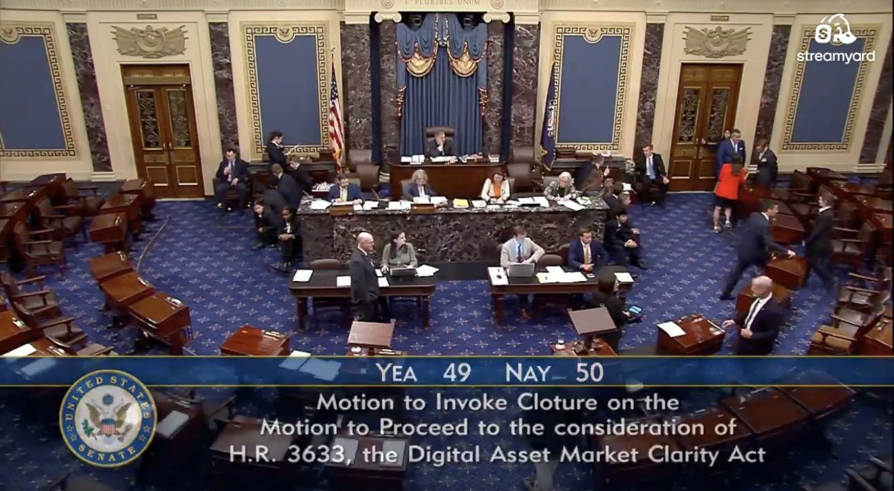
🚨NEW: The Clarity Act has failed to advance in the Senate after falling short of the 60 votes needed to invoke cloture. It did not even secure 50 votes.
1/ This one stings. Our team gave everything we had to get the Clarity Act across the finish line. So did most of the industry. This was an opportunity bigger than Ripple or one company - we did this for the industry, for consumers and to cement the US’s position as the crypto capital of the world and as a leader in the future of finance. Ultimately, consumers and U.S. competitiveness got left behind.
2/ A post mortem needs to be done on why this failed (more from me on that in the days ahead). The politics of the democrats (the anti-crypto army) was elevated over good policy.
3/ There is still reason for optimism for crypto in the United States. Now, the SEC, under Chair Atkins, and the CFTC, under Chair Selig, will continue to work hard to issue rules to fill the legislative gap and we will continue to be actively engaged in that rule making process.
4/ Ripple's business has never been stronger — real demand across traditional finance and the digital asset ecosystem. A missed vote in Washington doesn't change our momentum, our global footprint, or our customers.
This afternoon, Senate Democrats proved they were never truly serious about protecting consumers and preserving American leadership. I sat at the table with Senate Democrats working in good faith to get this done while they played games.
For over a year, they presented demands and the second we met them, they made new demands and moved the goal posts. Today they voted against real limitations on politicians’ personal crypto investments. They voted against protecting American consumers from the scammers and fraudsters this bill would have shut down. They voted against American leadership, and handed China and every one of our foreign competitors exactly what they wanted. Democrats chose politics over the American people—again. That’s not leadership on their part, that’s surrender to their radical, socialist base.
The once-proud Democratic party is anti-consumer and pro-illicit finance, anti-ethics, anti-free enterprise, anti-worker, anti-livable wage jobs, and pro-socialism. The Democrats are now anti-American. Sad!
Transactions on public blockchains are transparent, but measuring economic activity is often not. Commonly used measures of cryptoasset and #DeFi activity can differ substantially depending on how blockchain data are treated. https://www.bis.org/publications/working-paper-1377-hidden-complexity-measuring-stablecoin-crypto-and-decentralised-finance-ecosystems
The CLARITY Act didn't advance in the Senate today, which was a disappointment. While it's possible bi-partisan conversations continue and it lives to fight another day, we can't wait on Congress anymore.
The SEC and CFTC have the tools they need to create clear rules under existing authority, and I expect will begin working on this in earnest.
So clarity is coming to crypto regardless.
And of course GENIUS is already the law of the land for stablecoins, which is even more permissive on rewards. There were some concessions we made on CLARITY that were tough to swallow, so perhaps it's for the best.
Crypto can't be uninvented. With clarity emerging through the regulators, we'll continue updating the financial system.
Louisville Athletics announces a brand partnership with Ripple, bringing the XRP logo to Louisville Basketball
Details: https://t.co/AQTXewVCOg
#GoCards
▶ Watch on X🇺🇸 NOW: Senate Democrats are sending Republicans a counteroffer on the crypto bill, hours before Tuesday's 2:15pm ET procedural vote, per Politico.
BREAKING: The Crypto Clarity Act officially fails to pass in the Senate in a major setback for US crypto regulation.
JUST IN: 🇺🇸 Republicans reject Democrats' Crypto Clarity Act counter-offer as negotiations remain deadlocked.
WATCH: @RepGarbarino on ensuring U.S. Treasury markets are robust:
“Under U.S. generally accepted accounting principles, clearers are treated as agents rather than principals, meaning client-cleared trades typically do not come onto the cleared balance sheet. Many U.S. broker-dealers that are subsidiaries of foreign parent companies must also comply with the International Financial Reporting Standards, or IFRS, which has not made the same clarification. Absent IFRS guidance, those firms could be required to carry cleared trades on their balance sheets, significantly impairing their ability to participate in the Treasury market. I'm concerned that excluding major market participants because of accounting inconsistency could restrict Treasury market liquidity and run counter to the goal of the Treasury clearing mandate. We do not want international standard-setting bodies hindering the successful implementation of our Treasury clearing efforts.”
📺⬇️
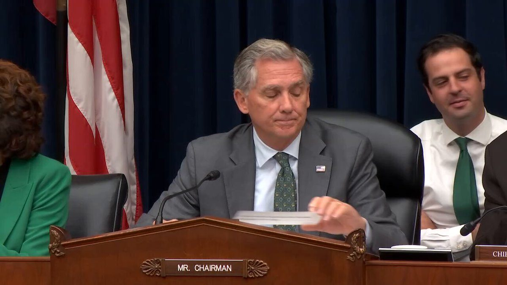
▶ Watch on XWATCH: Chairman @RepFrenchHill questions Secretary Bessent on reducing unnecessary regulatory burdens on small banks and community financial institutions, to which he responds:
"We believe that we must get this right because as you said, it has gone on for years and we want to do that with a combination of potentially raising the thresholds and also giving credit to institutions for the duration that they have known their clients. So, we are in the midst of this, and, as always, we will be looking after our smaller financial institutions — small banks and community banks — to obviate any excess expense [and] that they are doing it while maintaining the safety and soundness of our financial system."
📺⬇️
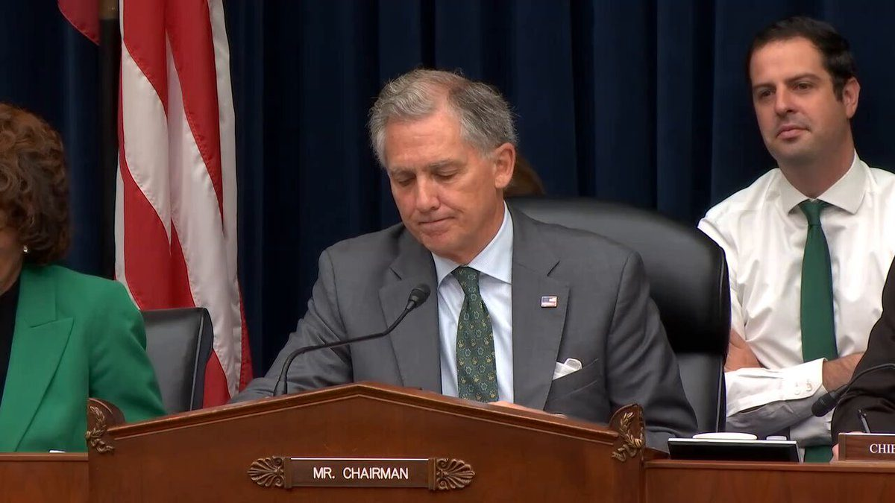
▶ Watch on X.@SecScottBessent: "U.S. manufacturing is roaring back to its fastest pace in years. August marked eight consecutive months of domestic manufacturing growth. Business activity has surged to a 52-month high. And as companies allocate trillions to building and expanding across the U.S., the Atlanta Fed now projects Q3 GDP growth to surpass 4 percent. A new industrial supercycle is moving from investment into production, and from blueprints into paychecks.”
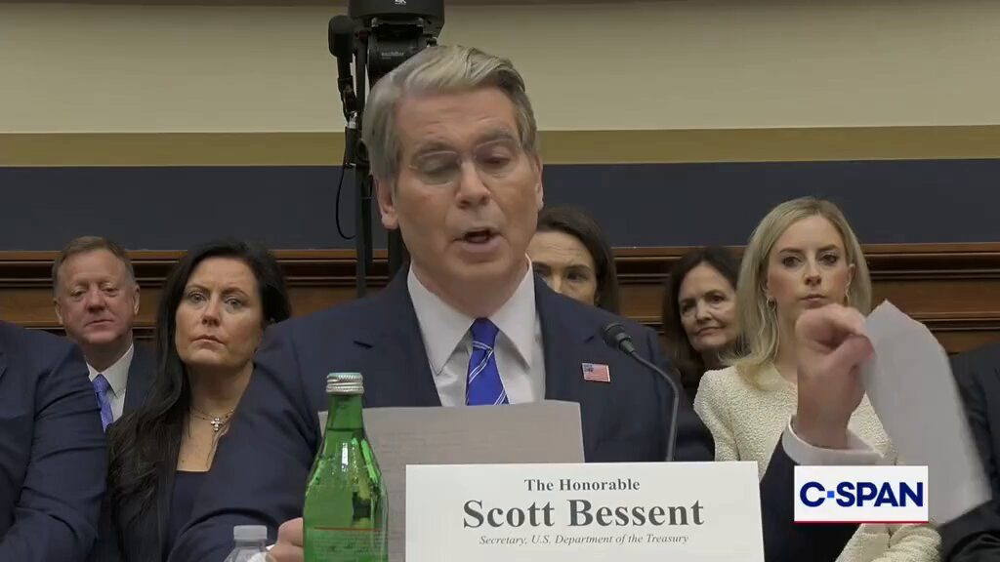
▶ Watch on XNew @uscensusbureau data shows:
— Real household income reached its highest level in history ($87,460) in 2025, surpassing the previous record set in President Trump's first term.
— After-tax household incomes rose by 3.1% in 2025.
— The poverty rate in the U.S. fell to its lowest level in history, falling back to the lowest level of the first Trump administration, also in 2019.
— The child poverty rate reached an historic low in 2025.
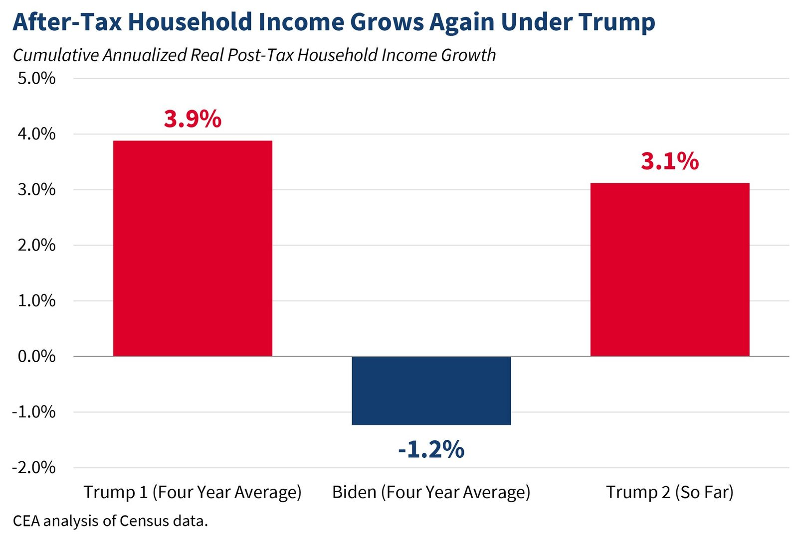
BREAKING: US jet fuel has surged to $4.43 a gallon, up 96% since the war began and 61% in the last ten weeks, with a 10% rise in the past week alone.
As a direct result, consumer US airline fares jumped 23% year over year in August with most of the recent crude oil rally not even yet in the data.
Jet fuel and diesel come from the same middle-distillate cut of the barrel, the cut the Gulf's light and medium crudes were built to supply, and those barrels are now cut off at Hormuz, the East-West pipeline and Bab el-Mandeb.
September CPI could show a jump in fares of 35% or more.
🚨 OMG. 100% of the fraudsters charged today in California for "ghost daycares" stealing $10M are MIDDLE EASTERN FOREIGNERS
Somalia, Syria, Afghanistan, Iraq, Sudan
NOT ONE NATIVE-BORN AMERICAN NAME IN THE ENTIRE LIST!!
DOJ dropped the full list of 12:
Fosiya Mohamoud, Somalia Abdulrahman Alawad, Syria Zetun Abdi, Somalia Ikramullah Mohmmand, Afghanistan Khetam Haouash, Syria Khatera Hashimi, Afghanistan Mariam Khamis, Sudan Mohamad Alawad, Syria Mazin Alawad, Syria Turkiya Alawad, Syria Zaryab Daudzai, Afghanistan Cezar Yaqoob, Iraq
Charges include wire fraud and money laundering. Basically all of them engaged in the same scheme of operating a childcare in Gavin Newsom's CA to take taxpayer funds
They submitted FAKE attendance records to take the money!
Sounds exactly like the kind of theft exposed by @nickshirleyy. DEPORT THE PIRATES!
🚨 Stephen Miller says the scale of welfare fraud is SO MASSIVE that eliminating it alone could balance the ENTIRE federal budget
"The amount that has been fleeced from us is in the HUNDREDS OF BILLIONS of dollars."
"We could balance the federal budget if the only dollars that went out of the treasury went to individuals who were properly, lawfully, correctly eligible to receive them."
This should infuriate EVERY taxpayer.
▶ Watch on X.@VP announces the permanent suspension of some 870,000 individuals tied to millions of dollars in fraud from ever being able to obtain federal loans.
"If you screwed the American taxpayer, the federal government is now going to say you're cut off. No more."
▶ Watch on X.@AGToddBlanche says more than 80 individuals have been charged so far in relation to over $245 million in pandemic-era loan fraud.
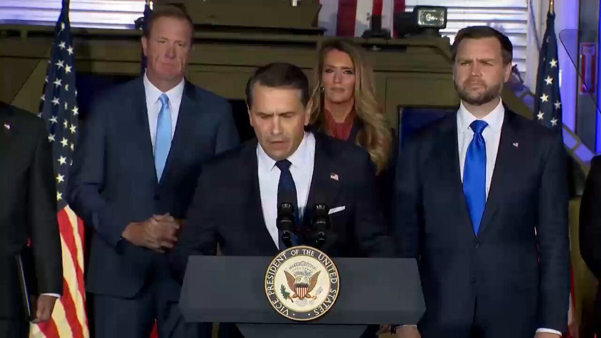
▶ Watch on XJUST IN FROM THE ALL-IN SUMMIT: NASA Administrator Jared Isaacman just laid out his vision for America’s next phase in space.
Among his most notable remarks:
• NASA expects “dozens of landers” and “dozens of rovers” to head to the Moon over the next four years, alongside major robotics and lunar resource experiments.
• Isaacman said the lunar south pole has only a limited number of viable landing areas near permanently shadowed craters containing water ice, creating what he described as a race for a small number of strategic “parking spots.”
• He warned China is targeting the same region, intends to build a lunar base with Russia and “will get to the Moon.” Isaacman said China is now an “incredible rival” and that “the Chinese are extremely good in space right now.”
• Isaacman called SpaceX NASA’s “most important launch partner” and said the U.S. would be “seriously challenged in the high ground of space” without its capabilities.
• On Mars, he argued the hardest problem is not getting astronauts there, but getting them home - and said NASA should develop nuclear-powered transfer vehicles that reduce the need to manufacture return propellant on Mars.
• He said NASA’s SR-1 Freedom nuclear mission will be followed by “SR-2, SR-3, SR-4,” with technology ultimately aimed at destinations including Enceladus, Europa and Titan.
In summary, the message from @NASAAdmin was clear: the next space race will be won by whoever can secure the Moon’s most valuable terrain, build permanent infrastructure there and use it as the springboard to Mars and beyond.
$300 million invested in Franklin, Louisiana.
300,000 additional square feet of shipyard space.
330+ employees today and continuing to grow.
The infrastructure and workforce to build autonomous ships at scale. We’re expanding our footprint in Franklin to meet the scale of the mission ahead.
This is what investing in the future of American shipbuilding looks like.
EPA repeals power plant emissions rule; North Dakota leaders celebrate ‘win for energy grid’
🚨 WOW! Director Kash Patel drops this truth nuke to Senate Democrats' face, the FBI has FOUND 11,081 child victims, a 21% surge — and the US is undergoing the most prolific crime reduction in history
5K child predators and traffickers arrested. 🙏🏻
Huge wins!
"This FBI has found and located more children than any FBI in the history of this country. We have arrested 5,072 child predators and human traffickers. That's up 13%."
"The FBI has arrested 54,000 violent criminals. That's up 90% from the 18-month period prior to that!" 🔥
"31,000 violent gang members have been arrested by the FBI. That's up 30%, making America safe. We've removed, the FBI has removed 3,258 kilograms of fentanyl."
The Bureau has also ARRESTED a swath of Most Wanted Fraudsters worldwide, and seems to be making new high profile arrests every WEEK!
Bravo, @FBIDirectorKash
The doubters and Democrats who said Kash wasn't qualified were WRONG. He's letting good cops be good cops, and it's WORKING
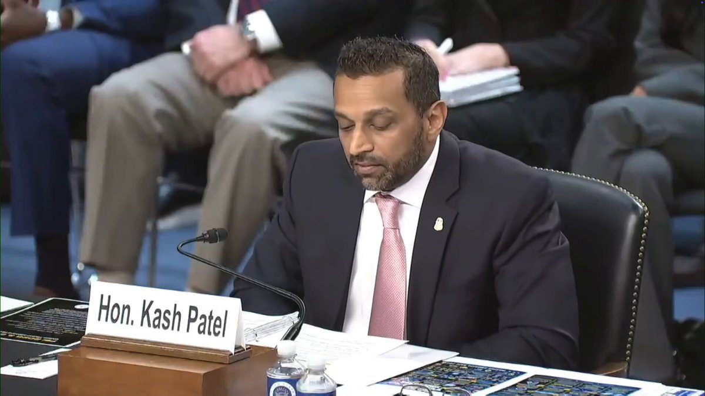
▶ Watch on X.@FBIDirectorKash spends almost 12 minutes ticking through the results of the FBI under President Trump's leadership: "This has been the most prolific run of crime reduction in United States history."
▶ Watch on XEXCLUSIVE: Based on our satellite imagery analysis conducted on 2026-09-14, we can see that the Strait of Hormuz now hosts bi-directional daytime traffic of VLCC supertankers. Furthermore, greater volumes of crude oil, LNG and LPG are being exchanged via STS transfer in the Gulf of Oman.
#OOTT #IranWar #Tankers
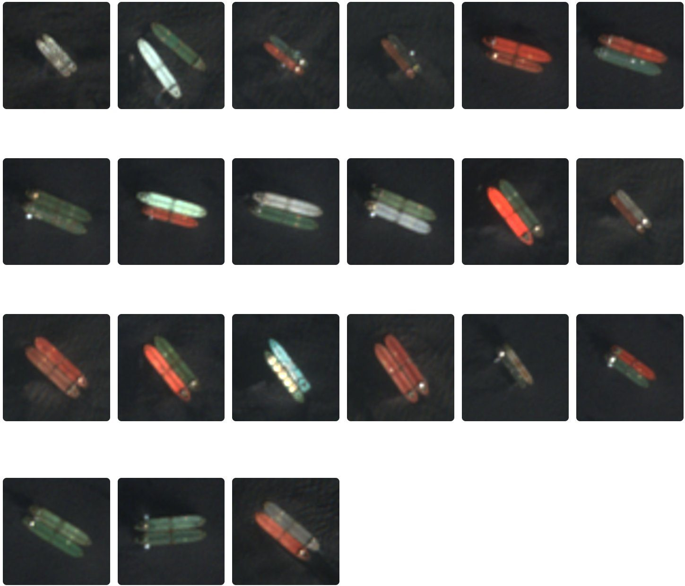
JUST IN: 🇸🇦🇪🇺 Saudi Arabia cancels September crude oil shipments to some European refiners.
JUST IN: 🇸🇦🇾🇪 Saudi Arabia issues danger warning alerts in several cities as Yemen's Houthis launch attacks.
🚨 BREAKING: FBI Director Kash Patel just announced that NGO Southern Poverty Law Center's Director of Intelligence Heidi Beirich has been ARRESTED and CHARGED with the following crimes
- Wire fraud conspiracy - Conspiracy to submit false statements to a federally insured bank - Conspiracy to commit concealment money laundering
I voted for this law and order, @FBIDirectorKash! 🔥
"Beirich played a primary role in this scheme. From at least 2007-2023, Beirich allegedly helped orchestrate this fraudulent activity worth approximately $4.2 million, conspiring with SPLC to defraud donors, obtaining money through these materially false and fraudulent pretenses and omissions to pay leadership of the very violent organizations SPLC claimed to oppose."
The massive fraud is all crashing down!
.@SecMullinDHS on sanctuary cities: "It's a safe haven for criminals, it's a safe haven for child trafficking, it's a safe haven for drug activity, it's a safe haven for murderers and child-predators."
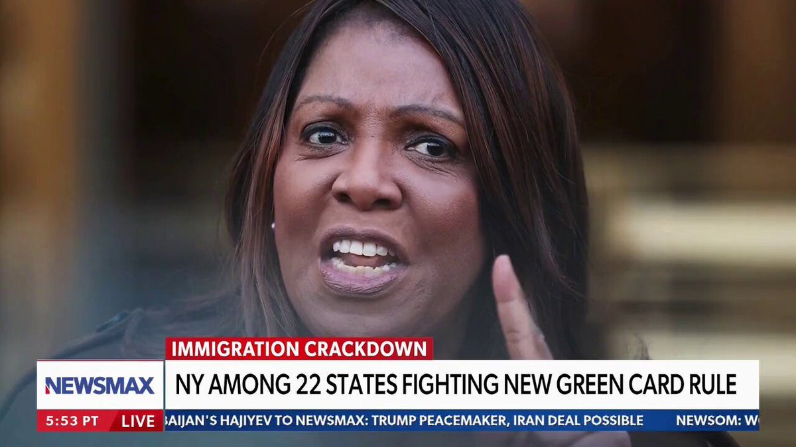
▶ Watch on X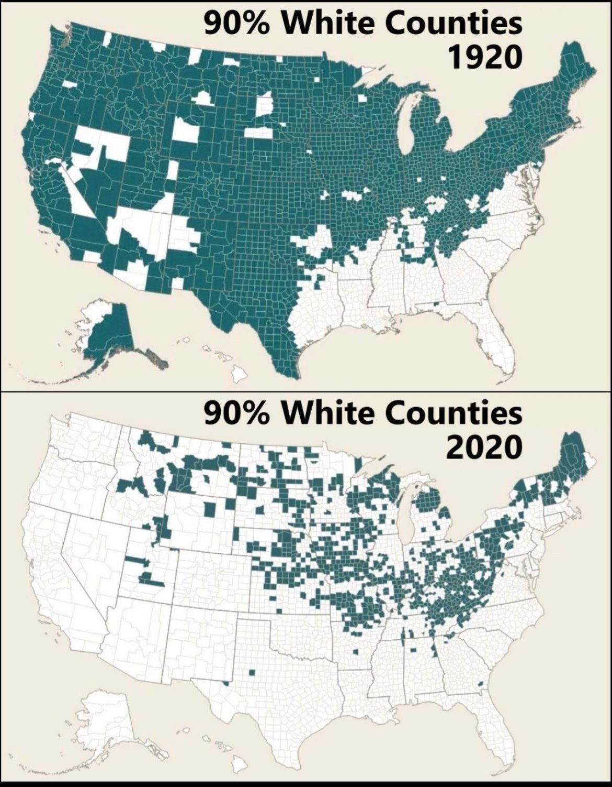
Breaking News: More than 20 states sued the Trump administration over its policy to restrict immigrants from obtaining green cards if they rely on public benefits.
BREAKING: The Supreme Court has refused to let USPS’s new mail-ballot rules take effect for the 2026 midterms. Justices Alito and Thomas dissent.
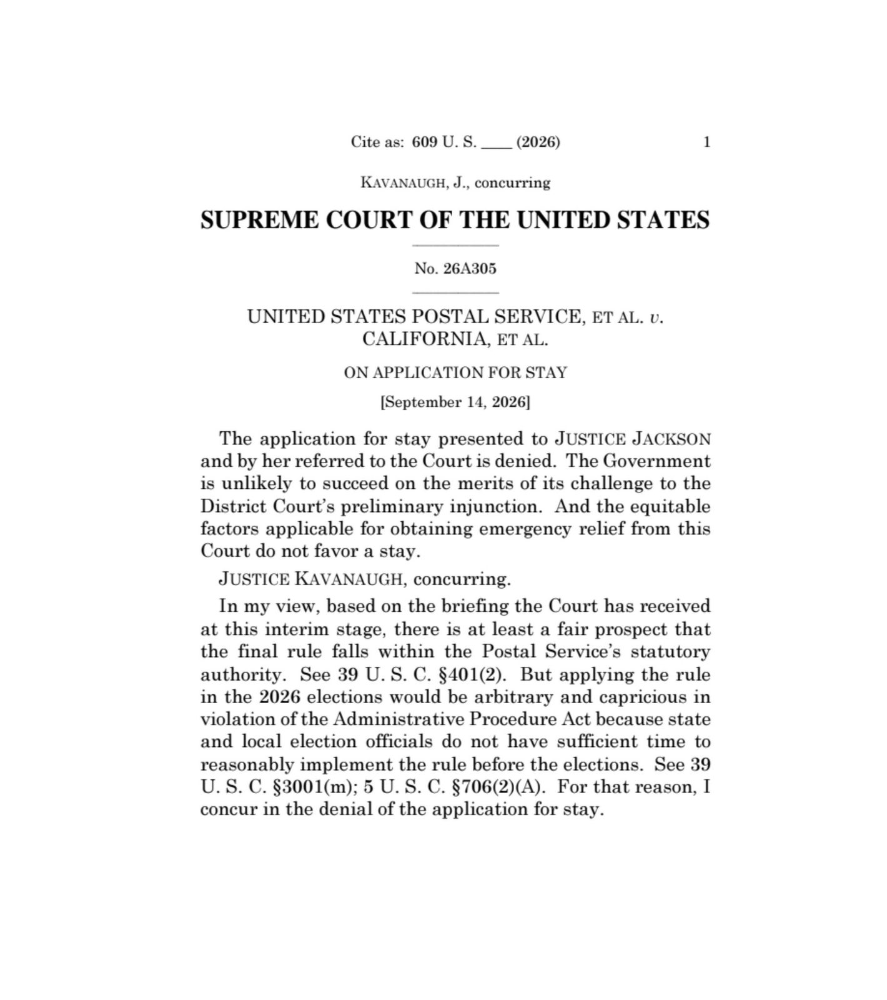
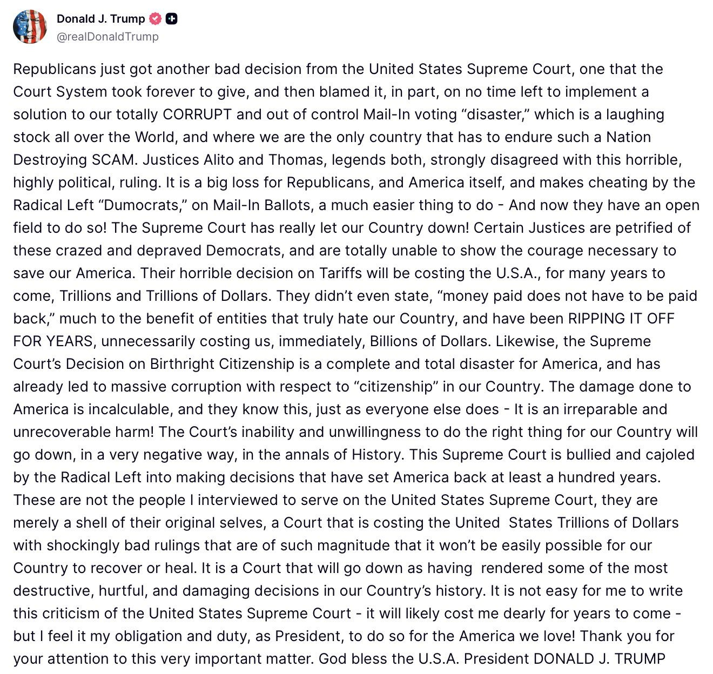
Jamie Dimon, CEO of JPMorgan Chase, on Mark Carney’s “middle powers” strategy and Europe’s economic decline🇺🇸🇨🇦🇪🇺
“When Mark Carney said, ‘The middle powers should get together’ … it’s a fantasy. They did that, it’s called Europe. The GDP of Europe has gone from 90% of America to 70%. And in our view, it will probably continue to erode over time because of high taxes and poor policy.”
🚨 WATCH: Chairman @RepTimBurchett exposes the homelessness crisis in LA and Mayor Bass’s failure to appear before Congress.
“Mayor Bass seems intent on evading accountability. But she knows we will not let her off the hook.”
Americans deserve the truth.
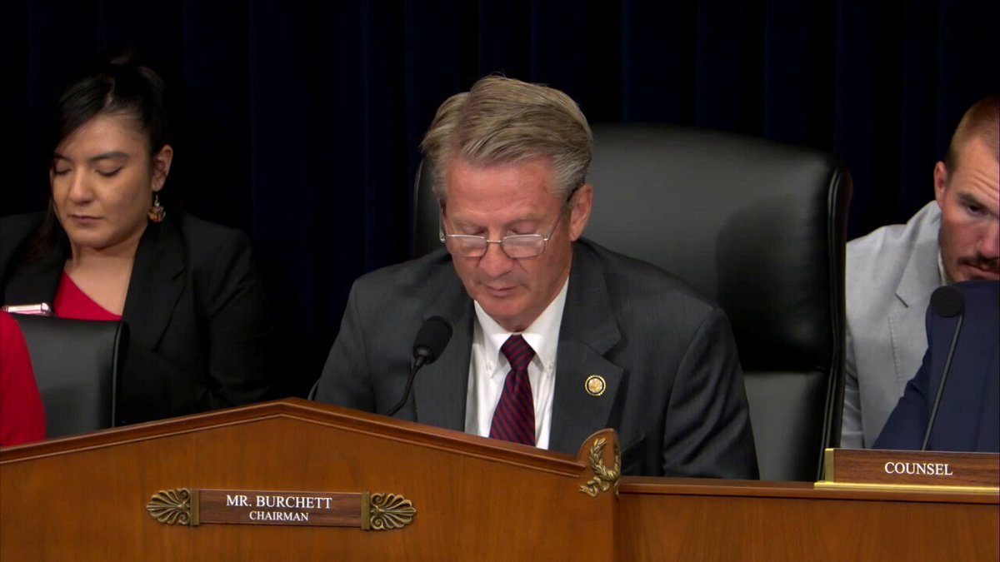
▶ Watch on XThe new frontier of artificial intelligence belongs to us, not doomers.
Under President Trump, the United States will remain AI DOMINANT.
BREAKING: US strips millions in military aid from Europe and the Middle East to support Trump-aligned governments in Latin America — AP
Chinese energy company signs 20-year deal to buy American natural gas
KREMLIN: IF SANCTIONS ARE LIFTED, WORLD ENERGY PRICES WILL GO DOWN